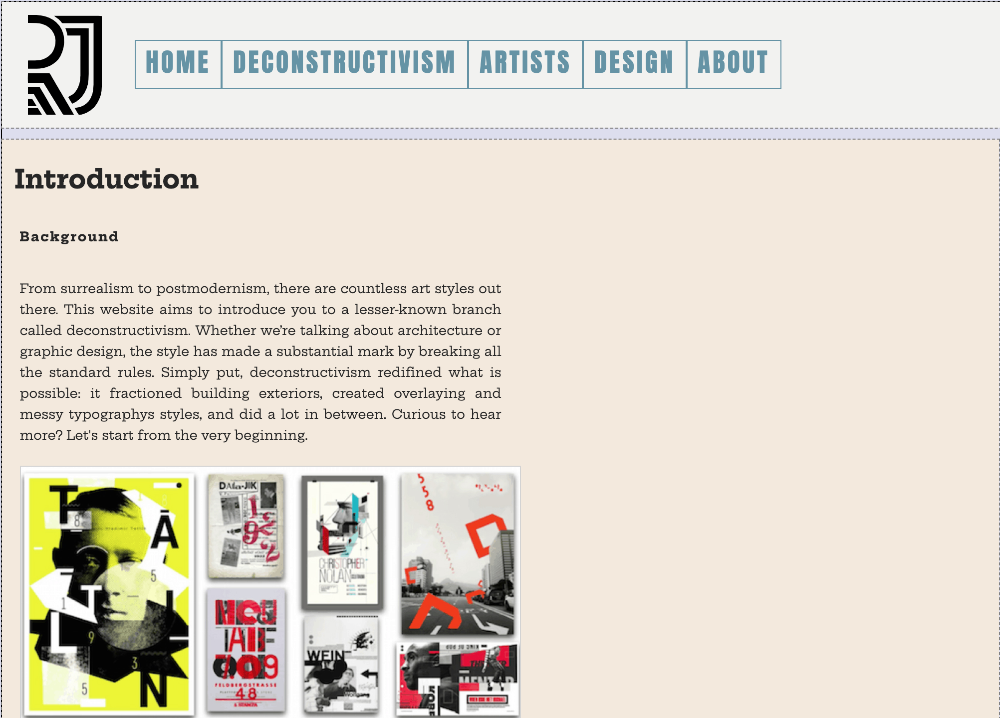

Theme 02: Basic Web
Assignment: 02.04.01 Responsive website
Goal: Throughout the project, the high-level focus was to learn how to create a website that is user-centric, meaning it is responsive to whatever device he or she is using. There were also many details taken into consideration, from sketching your own logo to learning about a specific art style. I've learnt about deconstructivism art style and made all design decisions based on it, including fonts, layouts, colours and created the overall feel that is unpolished, edgy and grunge.
My part: As it was an individual assignment, everything from scratch was done by me, including the hand-coding, research, content and design parts of the website.
Key takeaways: At the top of my learning sits the knowledge of producing HTML semantic markup and adding style to it with the use of CSS, especially learning about div elements, creating grids, as well as indicating breaking points and then adjusting them with media queries. Another part of it was learning about the domestic side of creating a website: using software like Brackets, hosting a site and validating code. I’ve also got to know how to document my work and select the essential design elements based on my research; edit and optimise images for the web, use colour-coordination, and heaps more.
